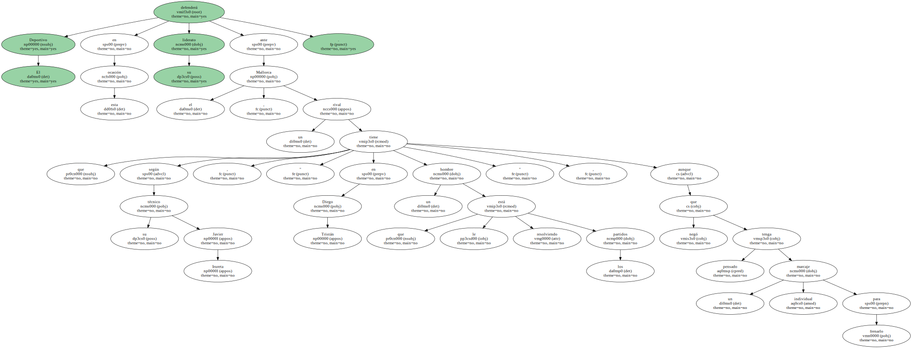
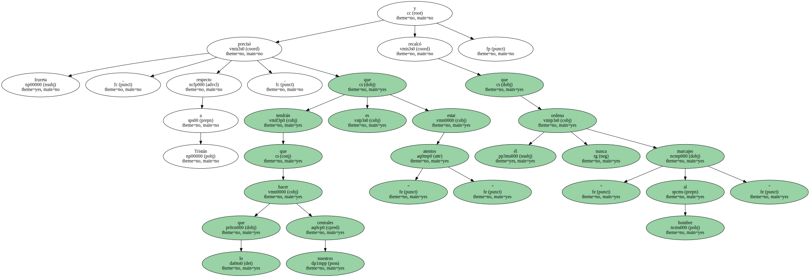
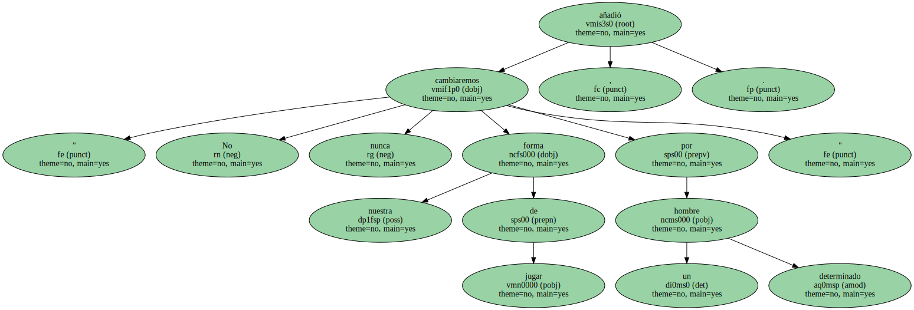
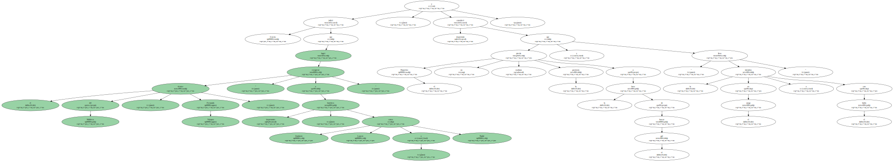
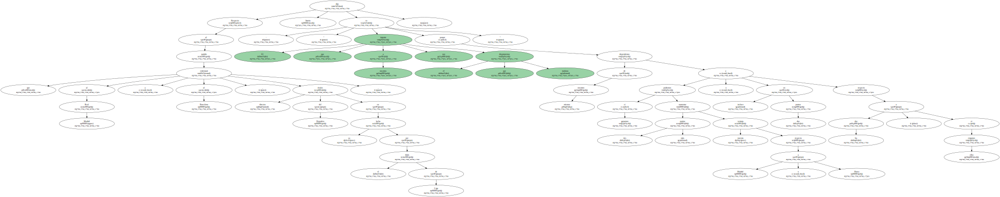
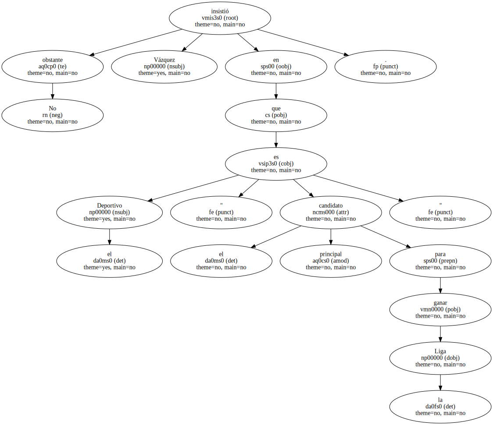
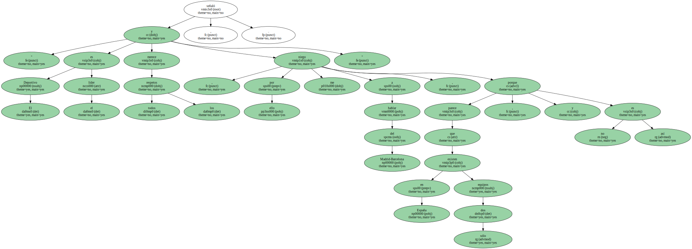
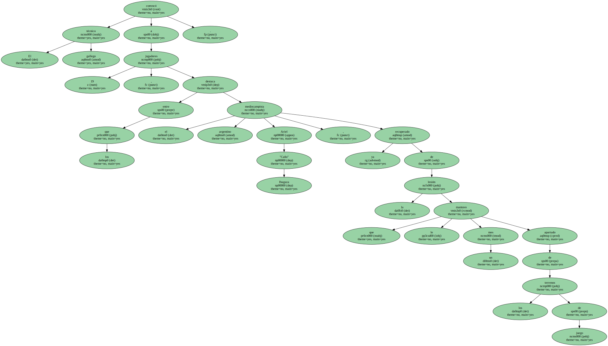
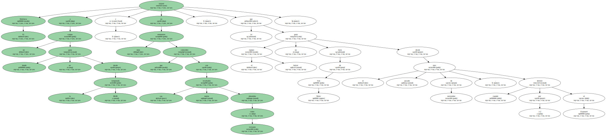

El Deportivo defenderá en esta ocasión su liderato ante el Mallorca , un rival que según su técnico Javier Irureta , " tiene en Diego Tristán un hombre que le está resolviendo los partidos " , aunque negó que tenga pensado un marcaje individual para frenarlo.
Irureta precisó , respecto a Tristán , que lo que tendrán que hacer nuestros centrales es estar " atentos " y recalcó que él nunca ordena " marcajes al hombre ".
" No cambiaremos nunca nuestra forma de jugar por un hombre determinado " , añadió.
" El juego del Mallorca se basa en la fortaleza defensiva y en contragolpes que Tristán suele resolver bien arriba " , comentó Irureta , quien calificó al equipo balear de " muy armónico y homogéneo , que lleva ya tres años muy bien y está haciendo un buen campeonato ".

Irureta indicó que el técnico del Mallorca , Fernando Vázquez , " logró recuperar a hombres importantes , como Stankovic , Lauren o Nadal " , y consideró importante que el Deportivo no pierda mañana la paciencia a la hora de buscar el gol y " lleve la iniciativa en el juego y con el balón ".
Respecto al partido que enfrentará al Real Madrid y al Barcelona , rivales directos del Deportivo en su lucha por el título de Liga , Irureta dijo : " El que a nosotros nos importa es el que disputaremos mañana porque dependemos de nosotros mismos y si ganamos podremos aumentar tres puntos más nuestra ventaja respecto a Madrid o Barca o incluso en dos puntos respecto a los dos , si ellos empatan ".
Vázquez viaja a Riazor con la intención de amargarle el liderato al Deportivo y dijo que si su equipo es capaz de ganar mañana , también se meterá " en el grupo de aspirantes al título ".

No obstante Vázquez insistió en que el Deportivo " es el principal candidato para ganar la Liga ".
" El Deportivo es el líder y merece todos los respetos , por ello me niego a hablar del Madrid-Barcelona , porque parece que en España existen sólo dos equipos , y no es así " , señaló.
El técnico gallego convocó a 19 jugadores , entre los que destaca el mediocampista argentino Ariel "Caño" Ibagaza , recuperado ya de la lesión que le mantuvo un mes apartado de los terrenos de juego.
El Mallorca viajará a un campo donde no gana desde la temporada 88-89 , y en unos momentos que coinciden con sus malos resultados obtenidos como visitante , ya que el equipo balear no gana lejos de Son Moix desde el pasado mes de noviembre , cuando derrotó por 1-2 al Espanyol.
